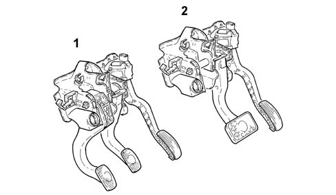

3330B PEDAL UNIT
- Path
- Descriptions > 33 BRAKING SYSTEM > 3330 HYDRAULIC BRAKING SYSTEM > 3330B PEDAL UNIT
- Kind
- system description
- Applies to
- all engines; all production periods
- Interactive page
- https://sloeber94.github.io/elrnDB-aGt/en/#/125000348
Applies to: all engines; all production periods
CONSTRUCTION SPECIFICATIONS
A pedal assembly, separated from the power unit, has been adopted on all vehicles, consisting of a mounting with the clutch and accelerator pedals made from plastic with the brake pedal remaining in steel. The solution adopted has been it possible to fit a 10" increased brake servo and produce a significant reduction in weight.
The pedal assembly ratio between the travel of the brake pedal and the sliding of the piston in the master cylinder allows the specifications of the brake servo to be exploited better as well as offer gentle, optimum braking.
The arrangement of the pedals has been improved, in terms of ergonomics, taking into considerations values that measure the angles of the heel and the position of and space between the actual pedals. On the 2.0 Selespeed version, the pedal assembly does not have a clutch release pedal as this function is automatically implemented by the gearbox electro-hydraulic unit operated by the Selespeed system control unit
Characteristic of working principle 2127A HYDRAULIC TRANSMISSION EXTERNAL LINKAGE
.
The accelerator pedal incorporates two potentiometers, a main one and a safety one, which transmit the extent of the movement of the actual pedal to the control unit which implements the consequent throttle opening
Characteristic of working principle 1056 PETROL INJECTION SYSTEM
.

1 - Pedal assembly for versions without Selespeed
2 - Pedal assembly for versions with Selespeed